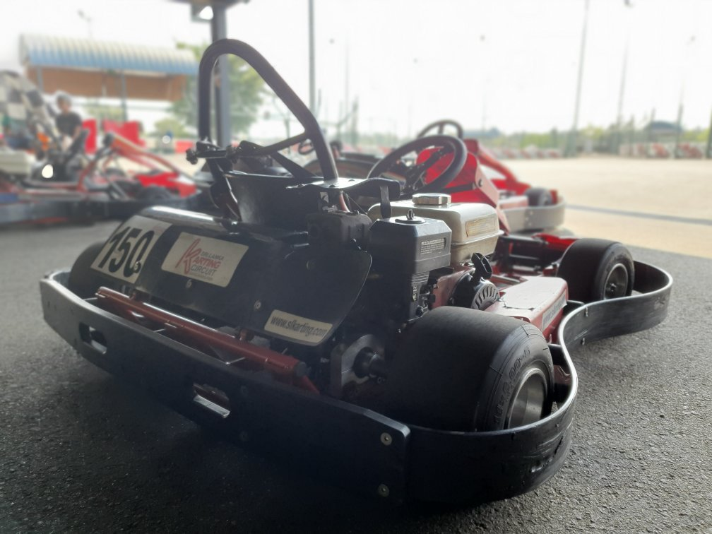

This is the largest karting circuit in Sri Lanka located in
Bandaragama.
The circuit comprises a 1216 -meter international racing track with
multiple layouts also can run 2 different races simultaneously.
Additionally 171-metre kiddies’ rental track,
designed and built to international specifications.
Easily accessible via the Southern Expressway,
Sri Lanka Karting Circuit provides the opportunity for
karting enthusiasts to experience professional motorsports
with the facility to practice and race as much as they want.
A fleet of rental karts and safety gear is made available
for anyone who wants to try out the sport or simply have fun.
Proud host of X30 Asia Cup 2018
